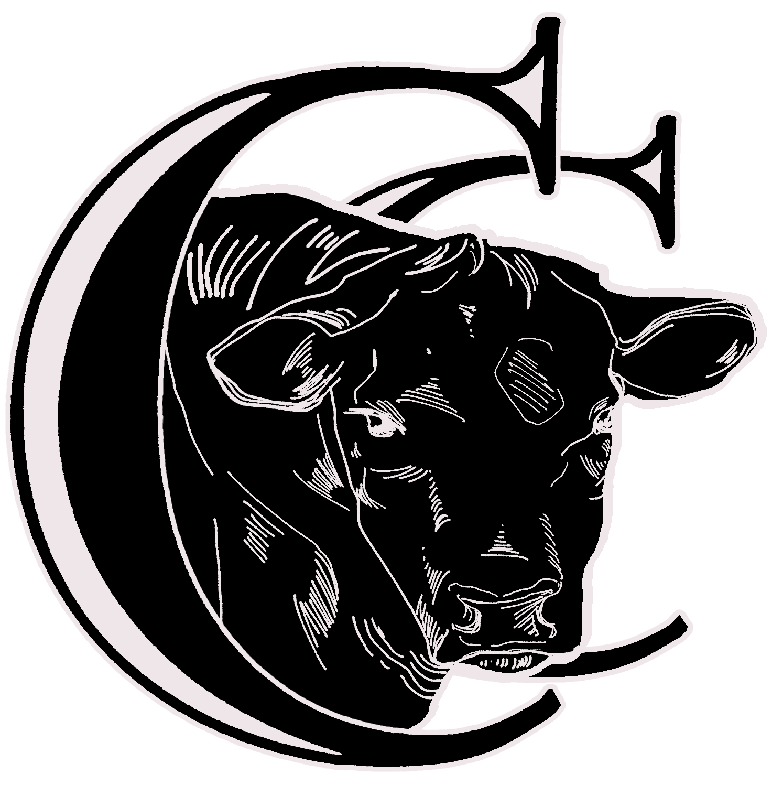

Double C Lowlines
HOME
CONTACTS
ABOUT US
SALE BARN
BEEF ORDERS
GALLERY
Take a Look: Images Around the Farm
A tiny calf here at the farm.
They love their turnip greens!
Someone has his friend over.
Who is this? What are you doing here?
A beautiful view.